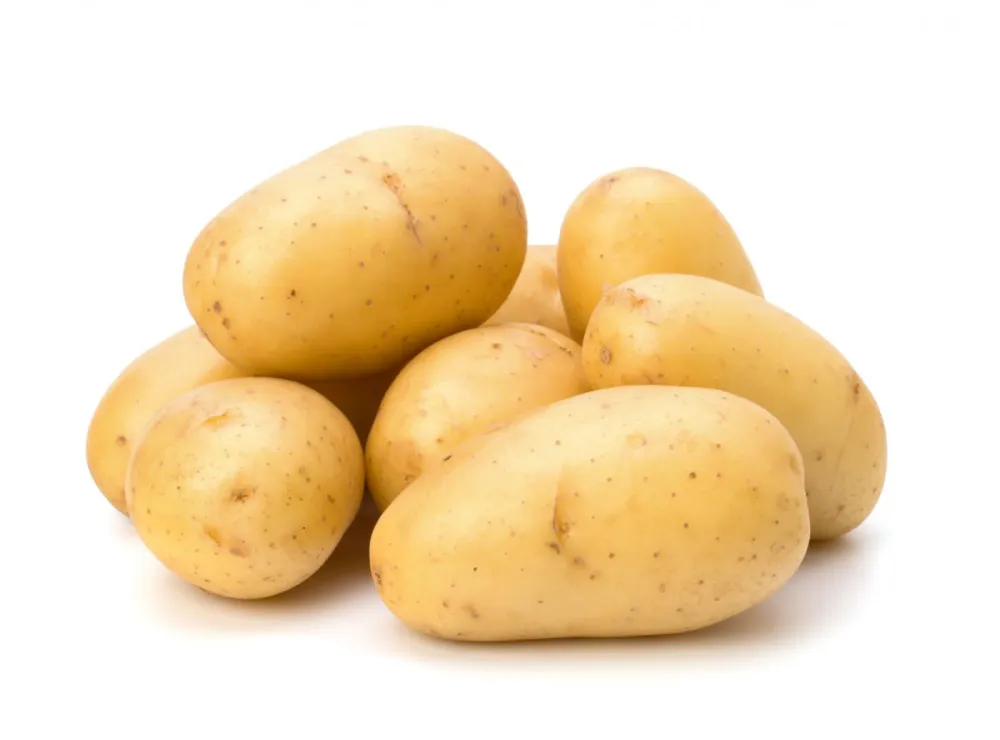
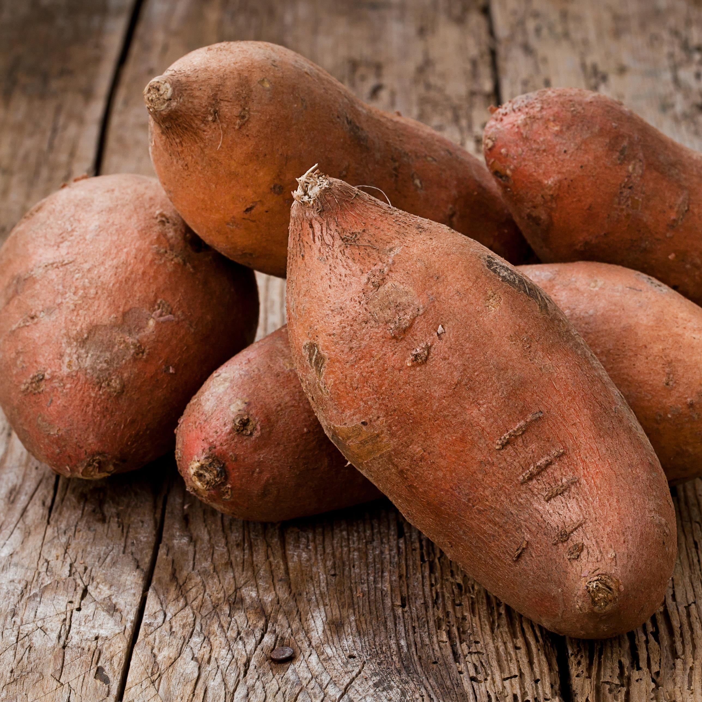

Inscription
Plus grands producteurs de patates
| Pays | Producion (tonnes) |
|---|---|
| République populaire de Chine | 99.122.420 |
| Inde | 43.770.000 |
| Fédération de Russie | 31.107.797 |
| Ukraine | 21.750.290 |
| États-Unis d'Amérique | 19.990.950 |
| Allemagne | 10.772.100 |
| Bangladesh | 9.474.099 |
| Pologne | 8.872.445 |
| France | 6.834.680 |
| Pays-Bas | 6.534.338 |
La Pomme de terre
Qu'est-ce que c'est?
La Pomme de terre ou patate (dans le registre informel ou bien en français canadien, suisse ou belge) est un tubercule comestible produit par l’espèce Solanum tuberosum, appartenant à la famille des solanacées. Le terme désigne également la plante elle-même, plante herbacée, vivace par ses tubercules mais toujours cultivée comme une culture annuelle. La pomme de terre est une plante qui réussit dans la plupart des sols, mais elle préfère les sols légers et légèrement acides. La plante est sujette aux maladies dans des sols calcaires ou manquant d’humus.
La pomme de terre est originaire de la cordillère des Andes (Pérou), dans le Sud-Ouest de l’Amérique du Sud où son utilisation remonte à environ 8 000 ans. Introduite en Europe vers la fin du xvie siècle à la suite de la découverte de l’Amérique par les conquistadors espagnols, elle s’est rapidement diffusée dans le monde et est en 2015 cultivée dans plus de 150 pays sous pratiquement toutes les latitudes habitées.
Elle est une source importante de glucides, qui se présentent principalement sous forme de féculent, et selon son mode de cuisson elle peut apporter des quantités notables de protéines et de vitamines. Ses qualités nutritives et sa facilité de culture font qu’elle est devenue l’un des aliments de base de l’humanité : elle figure parmi les légumes et féculents les plus consommés et est la principale denrée alimentaire non céréalière du monde. Cultivée et consommée localement, relativement peu commercialisée sur le marché mondial sous sa forme crue, elle est recommandée par l’ONU pour atteindre la sécurité alimentaire.
WIKIPEDIA
La patate douce
C'est très bon!
La patate (Ipomoea batatas), ou patate douce, est une espèce de plantes dicotylédones de la famille des Convolvulaceae, tribu des Ipomoeeae, vraisemblablement originaire d'Amérique tropicale. C'est une plante herbacée vivace dont la culture est très répandue dans toutes les régions tropicales et subtropicales, où on la cultive principalement pour ses tubercules (racines tubérisées) comestibles, riches en amidon. Le terme « patate » désigne aussi par métonymie les tubercules produits par cette plante. La patate est un cultigène hexaploïde, inconnu à l'état sauvage, cependant on a découvert en Amérique du Sud des formes sauvages tétraploïdes d’Ipomoea batatas.
Avec une production annuelle de 113 Mt (2017), récoltées sur plus de 9 millions d'hectares, la patate douce est la septième production agricole au niveau mondial, après le blé, le riz, le maïs, la pomme de terre, l'orge et le manioc. La Chine est de loin le premier pays producteur avec 72 Mt (64 %). La patate douce est consommée principalement dans les pays en développement, où elle est parfois un aliment de base, par exemple en Papouasie-Nouvelle-Guinée, dans les îles Salomon et dans certains pays d'Afrique de l'Est (Burundi, Ouganda, Rwanda). La patate douce est aussi utilisée en alimentation animale, notamment pour l'élevage des porcs. En Chine, c'est le principal débouché (60 à 70 %) de la production de patates douces, la consommation des tubercules frais (environ 10 %) s'étant effondrée avec l'urbanisation de la population et l'élévation du niveau de vie, tandis qu'une part croissante des tubercules est transformée en farine et en fécule.